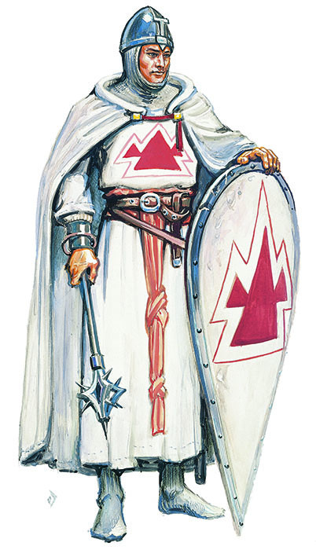

牧师

牧师（Cleric）
|
所需属性值： |
灵知
9 |
|
首要属性： |
灵知 |
|
可用种族： |
所有种族 |
牧师是最为常见的祭司。他可以是任何神系信仰的信徒（不过如果DM设计了一种特殊的神系，牧师的能力和法术或许会有相应的改变――详见下文）。牧师通常是善良的，但并不局限于善良阵营；他们这个阶级可以接纳任何阵营。牧师的灵知值必须达到9或更高。较高的体质和魅力也会十分有用。
灵知值达到16或更高的牧师能得到额外的10%经验值奖励。
牧师这个职业类似于中世纪的某些宗教骑士团：条顿骑士团，圣殿骑士团，还有医护骑士团。这些组织以保护与服务的行为准则将军事与宗教的训练结合起来。成员们被训练成骑士并献身于对教会的服务。这些阶级经常出现在基督教世界的外围，无论是荒野边缘还是饱受战争摧残的土地。大主教托宾（出自《罗兰之歌》）就是这样的一个牧师典型。其他的地区也有类似的阶级，例如日本的僧兵。
牧师是强壮的士兵，虽然他们可用的武器是受限的。他们能够穿戴任何种类的护甲和盾牌。标准的牧师被禁止导致流血及传播暴力，他们只能使用不锋利的钝器类武器。牧师可以使用不少魔法物品，其中包括祭司卷轴，大多数的药剂和戒指，部分魔杖和权杖，法杖，护甲，盾牌及其阶级可用武器的魔法版本。
然而，法术才是牧师的主要工具，这可以帮助他服务，强化，保护和治疗那些他所关心的人。他拥有能适用于不同需求的各种法术可供选择（某些特定神系的祭司可能会在法术的可用范围上受到限制）。牧师能够掌握除了植物，动物，气候和元素以外的其他领域的主要权能（他能够得到元素领域的次要权能，但不可施展其他三个领域的法术）。
牧师从他的神�o那里接受法术作为直接的喻示（神并不需要亲自出面来授予牧师他所祈求的法术），作为对他信念的象征和奖励，因此他必须避免滥用他的力量以免其因惩罚而被夺走。
牧师还被授予终结亡灵――以非生命形式而存在的邪恶生物，既非死去亦非活着――的力量。牧师有责任击败这些亵渎生命之物。他的斥退亡灵能力（详见第九章：战斗中的“斥退亡灵”部分）使他能够赶走这些生物，或甚至将其彻底摧毁（但邪恶阵营的牧师可以用自己的意志来束缚这些生物）。一些较为平常的亡灵有食尸鬼，僵尸，骷髅，食尸鬼和木乃伊。吸血鬼和巫妖（亡灵的术士）是最强大的亡灵之一。
当牧师的等级提升，他将会获得额外的法术位，更优秀的战斗技巧，以及更强大的斥退能力。当达到8级时，如果牧师已经建立了一个足够大的祭祀场所，那么他会自动引来一队狂热而忠实的信徒。牧师可以在他职业生涯中的任何时刻建造这个祭祀场所，但在达到8级前他都不会引来信徒。这些随从是准备着为牧师而战的普通勇士，0级的士兵。牧师将引来20至200个这样的随从；他们将在几周之内陆续抵达。在最初的随从集结后，不会有陆续填补死者的空缺的新随从。由DM决定牧师所吸引的随从的具体数量和类型。角色也可以雇用其他的部队，但这些军队并不会像他的随从那么忠诚。
在9级时，牧师可能会获得被批准兴建一座宗教要塞的正式授权。它可以是坚固的教堂也可以是与世隔绝的隐修院。很显然，这个要塞必须具备一个祭祀场所必备的各种装潢，并且必须是为牧师的事业而服务的。不过，由于这项工程将会得到官方的支持以及大量免费的劳动力，因此这座要塞的建造费用减半。牧师可以在9级之前就取得产权并建造要塞，但这样做并不会得到教会支持以及上述的各种好处。